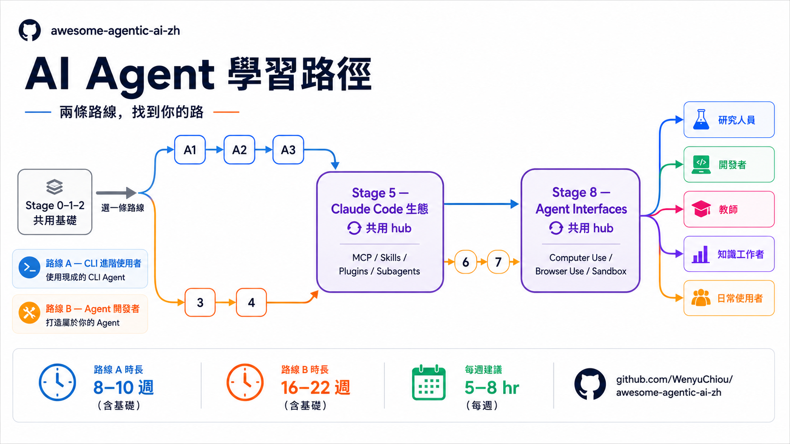

Threads｜余晟力推薦 awesome-agentic-ai-zh：繁中 AI Agent 學習地圖與 240+ 資源

一句話摘要
這則 Threads 值得保存，因為它指向一份很適合中文使用者的 AI Agent 系統化自學地圖：`awesome-agentic-ai-zh` 不只列工具清單，而是把 LLM 基礎、prompt、tool use、agent framework、Claude Code 生態、RAG / memory、multi-agent production、Computer Use / Browser / Sandbox 拆成可循序完成的學習路線。
來源脈絡
- Threads 作者：余晟力（@yushengli1105）。
- 貼文重點：作者稱這個 repo「非常猛」，比 Roadmap.sh 更清楚地描繪 AI agent 學習路徑；如果要學 AI，可以把錢用在 Codex / Claude Code 訂閱，搭配這份教學自學。
- 指向專案：WenyuChiou / awesome-agentic-ai-zh。
- GitHub 描述：A trilingual learning roadmap for agentic AI, from LLM basics to multi-agent systems, with 240+ curated resources and hands-on examples.
- GitHub 狀態：截至歸檔時約 6130 stars、816 forks，repo metadata 更新日 2026-08-21。
專案定位
官方 README 把 repo 定位成三件事：
- 學習路線圖：8 個階段、2 條學習路線、5 條延伸分支。
- 資源 curation：240+ projects，並整理中文 AI 生態中的 MCP / Skill catalog。
- 簡單 illustrative 案例：23 個練習 folder，包含 starter、dual-path SDK 對照與 mock-based tests。
這讓它比一般「awesome list」更接近課綱：先回答「下一步學什麼」，再給資料、範例與練習，而不是只堆一長串連結。
兩條主路線
### Track A：CLI Power User
適合想先把 Claude Code、Codex、OpenCode、Gemini CLI 等 coding / agent CLI 用起來的人。README 預估包含共用基礎、A1-A3、Stage 5 與 Stage 8，約 8-10 週。這條路線很符合現在「先用 agent 把工作做完，再理解背後原理」的學習方式。
### Track B：Agent Builder
適合想從零打造 agent、理解 tool use、ReAct、framework、RAG、memory、多 agent 與 production harness 的人。README 預估主幹最少 16-22 週，現實約 5-7 個月。對要設計課程、帶 workshop 或建立企業內訓路線的人，這條比較像完整 syllabus。
8 個階段重點
- Stage 0：Python、CLI、git、API、JSON 等基礎準備。
- Stage 1：LLM 基礎、token、API、模型比較與本地 LLM。
- Stage 2：Prompt Engineering。
- Stage 3：Tool use、function calling、ReAct、第一個 agent。
- Stage 4：LangGraph、AutoGen、CrewAI、Smolagents 等 agent framework。
- Stage 5：Claude Code 生態，含 MCP、Skills、Plugins、Subagents，是 Track A / B 共用 hub。
- Stage 6：Context Engineering、RAG、Memory。
- Stage 7：Multi-agent、eval、observability、production harness。
- Stage 8：Computer Use、Browser Use、Code Sandbox 等 agent 操作介面。
為什麼對 AI 學習雷達有價值
- 它把「工具使用」與「agent 建構」分流，避免初學者一開始就被 framework 與 paper 壓垮。
- 它把 Claude Code / Codex 這類 CLI agent 放進正式學習路線，而不是只當工具新聞看待。
- 它同時保留繁中、簡中與英文版本，適合中文社群共學、課程備課與跨語言分享。
- 它強調動手練習與正確使用 starter code，避免只讀 README 產生「我好像會了」的錯覺。
- 它把 MCP、Skills、Subagents、Computer Use、Browser Use 放進同一張 agentic AI 地圖，和 2026 年主流 agent 工程趨勢一致。
建議使用方式
- 如果目標是提高日常工作效率，先走 Track A：選一個 CLI agent，建立可重複工作流，再接 MCP / skills / subagents。
- 如果目標是教學、研發或打造產品級 agent，走 Track B：從 tool use、framework、RAG / memory、multi-agent production 逐層補齊。
- 若要做課程，可把 Stage 0-2 當共用先修，Stage 5 作為 Claude Code / MCP 實作週，Stage 8 作為 frontier agent interface 觀摩與專題。
- 不建議只收藏不動手；README 特別提醒 starter.py 是參考解答，正確做法是先自己重寫，再對照。
原始連結
Threads：
https://www.threads.com/@yushengli1105/post/DcOp60nGgJz
GitHub repo：
https://github.com/WenyuChiou/awesome-agentic-ai-zh
線上文件站：